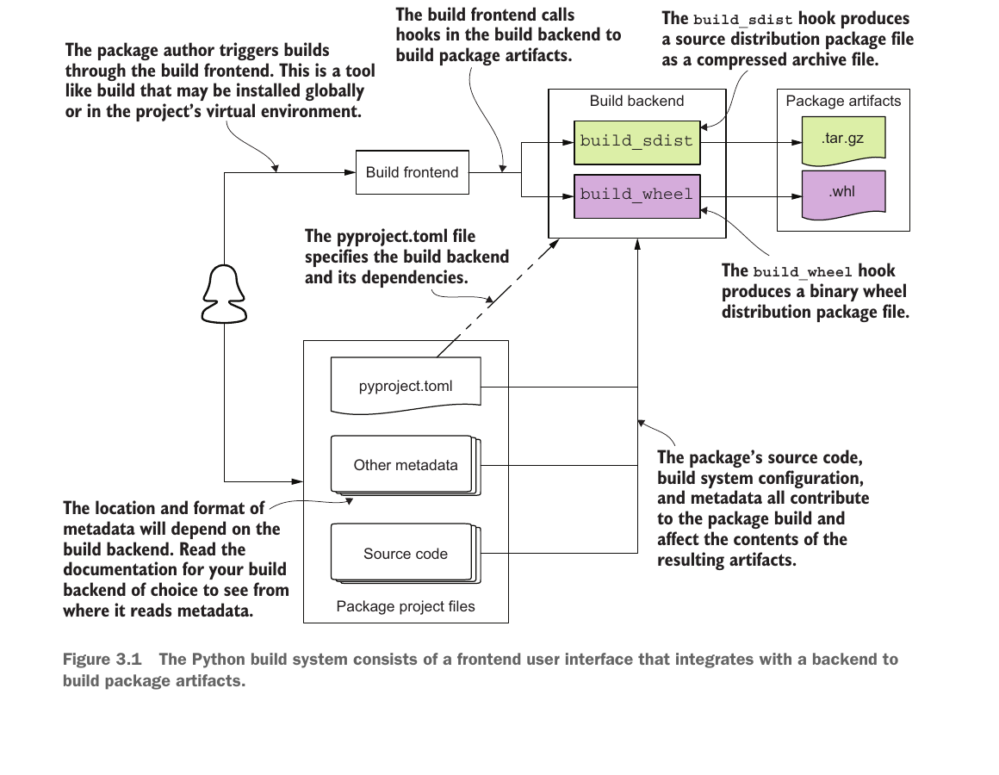

질문 1–4
1 무엇이 함께 가야 하는가?
2 세 이름은 왜 다른가?
3 누가 배포물을 만드는가?
4 배포물은 자신을 어떻게 설명하는가?
WEEK 03 · BUILD WORKFLOW
시작: checker.py와 rules.json
도착: 내용까지 확인한 sdist와 wheel
현재 질문 → 나이브한 시도 → 관찰된 실패 → 해결 → 전후 확인
1 무엇이 함께 가야 하는가?
2 세 이름은 왜 다른가?
3 누가 배포물을 만드는가?
4 배포물은 자신을 어떻게 설명하는가?
5 Python 코드를 어디서 찾는가?
6 JSON을 어떻게 함께 넣는가?
7 어떤 두 배포물을 만드는가?
8 완전성을 무엇으로 확인하는가?
STAGE 01 · QUESTION
checker.py는 파일명을 검사하고 JSON 파일에서 형식과 실패 문구를 읽는다.입력: 20261234_홍길동_과제1.py
↓
checker.py ← data/rules.json
↓
출력: 통과STAGE 01 · NAIVE ATTEMPT
checker.py만 복사checker.py 하나만 복사해 준다.data/rules.json이 없어 규칙을 읽는 지점에서 실패한다.내 폴더 전달받은 폴더
checker.py → checker.py
data/rules.json ✗ 파일 없음
FileNotFoundError: data/rules.jsonSTAGE 01 · SOLUTION
src/에는 함께 실행되는 코드와 데이터를, 루트에는 빌드·설명·라이선스 파일을 둔다.assignment-filename-checker/
├── LICENSE
├── README.md
├── pyproject.toml
└── src/assignment_filename_checker/
├── __init__.py
├── checker.py
└── data/rules.jsonSTAGE 02 · QUESTION
작업 폴더 ________/
배포물 정보 name = "________"
Python 코드 import ________STAGE 02 · NAIVE ATTEMPT
assignment-filename-checker를 세 위치에 똑같이 쓴다.# 배포 이름을 그대로 Import 이름으로 사용
import assignment-filename-checker
# SyntaxErrorSTAGE 02 · SOLUTION
[project] name, Import 이름은 src/ 아래 실제 폴더에서 확인한다.| 단위 | 이 사례의 이름 | 확인 위치 |
|---|---|---|
| 작업 폴더 | assignment-filename-checker/ | Git 작업 폴더 |
| Distribution | assignment-filename-checker | [project] name |
| Import package | assignment_filename_checker | src/ 아래 폴더 |
STAGE 03 · QUESTION
사용자: “표준 배포 파일로 만들어 줘”
↓
조정 역할: 설정 읽기 → 제작 역할 준비·호출 → 결과 수집
↓
제작 역할: 소스·메타데이터·포함 규칙 → 표준 내부 구조STAGE 03 · NAIVE ATTEMPT
pyproject.toml에 제작 진입점만 적는다.[build-system]의 필수 항목인 requires가 없어 조정 도구는 진입점을 제공할 도구를 준비할 수 없다.# assignment-filename-checker/pyproject.toml
[build-system]
build-backend = "setuptools.build_meta"
# requires 없음 → 조정 단계에서 유효하지 않은 설정STAGE 03 · SOLUTION
build: 명령을 받고 루트의 pyproject.toml을 읽어 backend를 준비한 뒤 build_sdist·build_wheel 호출로 바꾼다.setuptools.build_meta: 소스·메타데이터·포함 규칙을 읽고 각 압축 파일의 내부 구조를 만든다..tar.gz·.whl. 아래 세 상자는 backend가 읽는 입력이다.# 프로젝트 루트의 pyproject.toml
[build-system]
requires = ["setuptools>=77.0.3"]
build-backend = "setuptools.build_meta"
위: 요청 전달과 두 제작 hook · 아래: pyproject.toml, 메타데이터, 소스 코드 · 오른쪽: 두 산출물
STAGE 04 · QUESTION
이 배포물의 이름은? ________
어떤 판본인가? ________
무엇을 하는가? ________
어떻게 사용하는가? ________
어디까지 허용되는가? ________STAGE 04 · NAIVE ATTEMPT
checker.py만으로는 판본, 정상 입력 예, 재배포 허용 조건을 확인할 수 없다.checker.py를 읽고도 남는 질문
이름과 판본은? 한 줄 목적은?
사용 예는? 라이선스 원문은?STAGE 04 · SOLUTION
[project]
name = "assignment-filename-checker"
version = "0.1.0"
description = "Check assignment submission filenames"
readme = "README.md"
license = "MIT"
license-files = ["LICENSE"]description은 한 줄 목적, readme는 입력·출력과 사용법을 담은 긴 문서를 가리킨다.license는 SPDX 식별자, license-files는 법적 원문 경로다.METADATA·licenses/LICENSE에서 선언의 전파를 확인한다.STAGE 05 · QUESTION
assignment_filename_checker는 import할 코드 폴더이며, checker.py가 과제 제출 파일명의 형식을 검사한다.assignment-filename-checker/ ← 프로젝트 루트
├── pyproject.toml ← 검색 규칙을 적을 파일
└── src/
└── assignment_filename_checker/ ← 찾을 Import 패키지
├── __init__.py ← 패키지 경계
└── checker.py ← 파일명 검사 기능STAGE 05 · NAIVE ATTEMPT
pyproject.toml에 검색 시작점을 source/라고 적는다.where는 프로젝트 루트를 기준으로 해석되지만 실제 코드의 상위 폴더는 src/이다.assignment_filename_checker/checker.py가 없으므로 검사 기능을 전달하지 못한다.# assignment-filename-checker/pyproject.toml
[tool.setuptools.packages.find]
where = ["source"] # 루트에 실제로 없는 폴더STAGE 05 · SOLUTION
src/에서 Import 패키지 발견pyproject.toml 안에 쓴다.[tool.setuptools.packages.find]는 Setuptools에게 Import 패키지를 찾으라는 TOML 표다.where = ["src"]는 같은 표 안에서 루트 기준 검색 시작점 목록을 정한다.# assignment-filename-checker/pyproject.toml
[tool.setuptools.packages.find]
where = ["src"]pyproject.toml의 where
↓
루트 아래 src/에서 검색
↓
src/assignment_filename_checker/ 발견
↓
wheel: assignment_filename_checker/
checker.py ✓where는 패키지 이름이 아니라 그 상위 검색 출발점을 가리킨다.STAGE 06 · QUESTION
checker.py가 들어가도 이 코드는 실행 중 data/rules.json을 읽어야 한다.assignment_filename_checker/ ← 소유 Import 패키지
├── checker.py
└── data/rules.json ← 패키지 내부 경로STAGE 06 · NAIVE ATTEMPT
src/ 아래 파일은 모두 들어간다는 가정src/ 아래 JSON은 자동 포함된다고 가정한다.[tool.setuptools]
include-package-data = false
# package-data 선언 없음빌드는 성공했지만 JSON이 없다.
wheel 내부
checker.py ✓
data/rules.json ✗STAGE 06 · SOLUTION
[tool.setuptools]
include-package-data = false
[tool.setuptools.package-data]
assignment_filename_checker = ["data/*.json"]새 wheel 내부
checker.py ✓
data/rules.json ✓STAGE 07 · QUESTION
소스·빌드 설정·메타데이터를 전달해 받는 쪽이 wheel을 다시 만들 수 있게 하는 .tar.gz 파일이다.
코드·데이터·메타데이터를 설치 위치로 옮길 수 있게 미리 정리한 .whl 파일이다.
STAGE 07 · NAIVE ATTEMPT
프로젝트 폴더 전체를 일반 ZIP 파일 하나로 묶는다.
zip -r assignment-filename-checker.zip \
assignment-filename-checker/일반 ZIP 1개
sdist 없음
wheel 없음STAGE 07 · SOLUTION
프로젝트 소스
↓ sdist 제작
.tar.gz를 임시로 풂
↓ 그 소스로 wheel 제작
.whlpython -m build의 기본 순서다.--wheel이면 wheel만 직접 만들 수 있다.py3-none-any wheel은 순수 Python용이라 .py와 JSON을 담는다. 확장 모듈 wheel은 .so·.dll도 담을 수 있다.STAGE 08 · QUESTION
pyproject.toml과 PKG-INFOsrc/의 checker.py·rules.jsonREADME.md와 LICENSEchecker.py는 wheel을 다시 만들 때 읽는 소스다..py와 JSON.dist-info/의 METADATA·WHEEL·RECORD.dist-info/licenses/LICENSEchecker.py는 설치 위치로 복사할 순수 Python 실행 코드다.STAGE 08 · NAIVE ATTEMPT
Successfully built만 믿고 종료dist/의 파일명만 보고 배포 준비가 끝났다고 판단한다.rules.json이 없으면 실행이 깨지고, sdist에 pyproject.toml이 없으면 표준 재빌드 경로가 끊긴다.Successfully built ...tar.gz and ...whl
↓
파일 생성 ✓ sdist 재빌드 재료 ? wheel 설치 내용 ?STAGE 08 · SOLUTION
tar tf dist/assignment_filename_checker-0.1.0.tar.gz.../pyproject.toml ✓
.../PKG-INFO ✓
.../src/assignment_filename_checker/
__init__.py · checker.py ✓
data/rules.json ✓
.../README.md · LICENSE ✓unzip -l dist/assignment_filename_checker-0.1.0-py3-none-any.whlassignment_filename_checker/
__init__.py · checker.py ✓
data/rules.json ✓
...dist-info/METADATA ✓
...dist-info/WHEEL · RECORD ✓
...dist-info/licenses/LICENSE ✓checker.py라도 왼쪽은 wheel 제작용 소스, 오른쪽은 설치할 순수 Python 코드다. 두 실제 목록이 역할별 기대와 맞아야 검증을 통과한다.SUMMARY
checker.py와 rules.json을 확인한다.